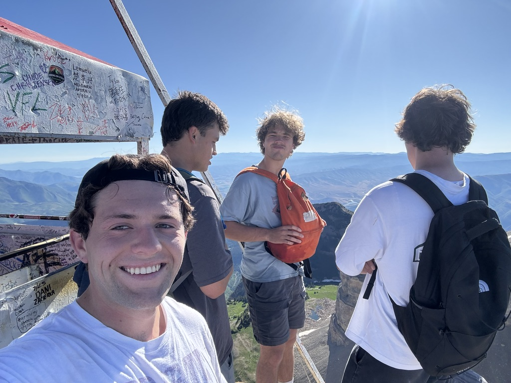

My Passion: Hiking the Great Outdoors
Exploring trails, peaks, and everything in between.
Why I Hike
Hiking is more than just a walk; it's an opportunity to disconnect from the digital world and reconnect with nature. It challenges me physically and mentally, and the reward is always a breathtaking view and a clear mind.
My Hiking Essentials Checklist
-
The Ten Essentials (Safety):
- Navigation (map, compass, GPS)
- Sun Protection (sunglasses, sunscreen)
- Insulation (extra layers of clothing)
- Illumination (headlamp or flashlight)
- First-Aid Supplies
- Personal Gear:
- Broken-in Hiking Boots
- Backpack (20-30 liters)
- Plenty of water and snacks
Cinematic Hiking Inspiration
This video captures the epic scale and beauty of mountain hiking.
Live Data: National Parks
National Parks are a great place to look for hikes!